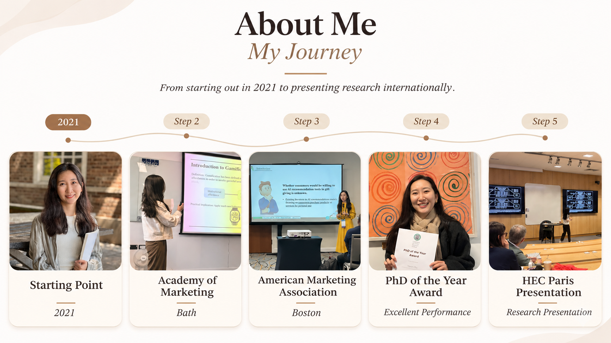
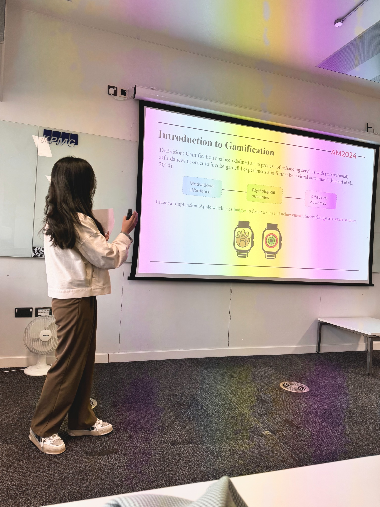
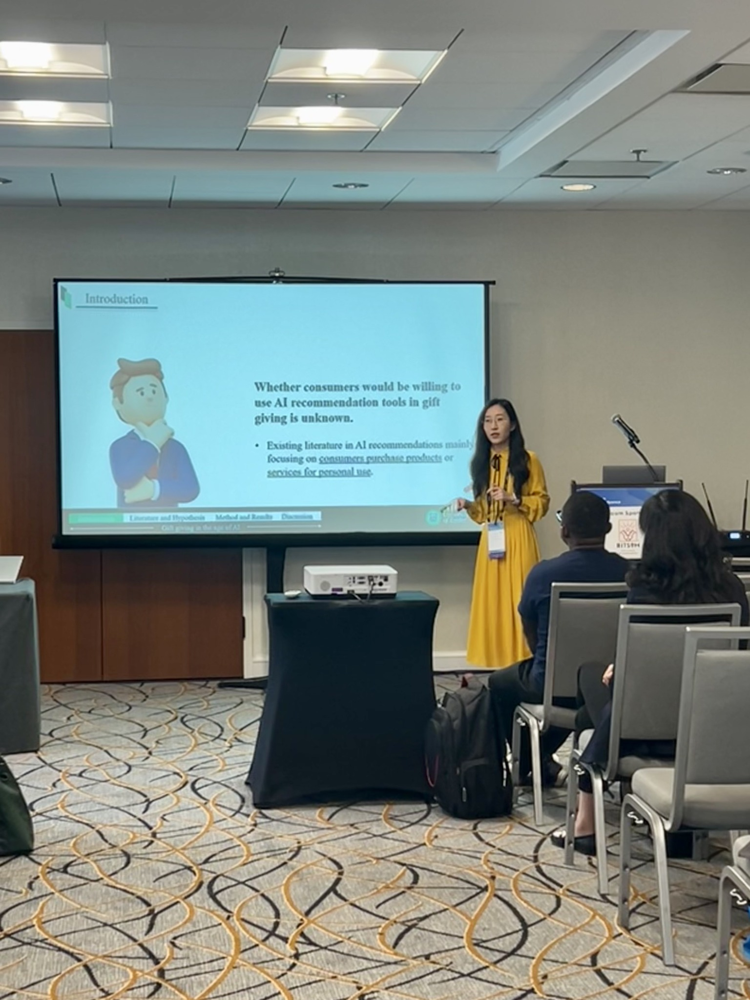
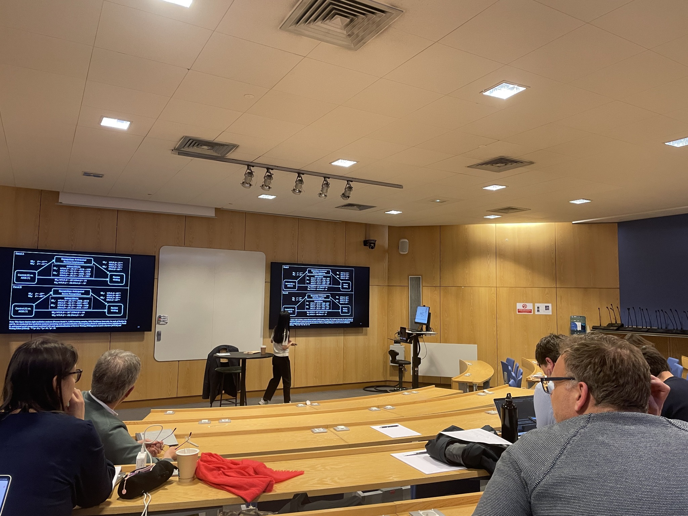

Hello, I'm a
Consumer Behaviour Researcher.
I explore the psychology mechanism behind people’s choices.
PhD in Management · University of Exeter
Visiting PhD Researcher · HEC Paris & Bayes Business school

01 / About Me
I hold a PhD in Management from the University of Exeter. My research focuses on consumer psychology and its intersection with artificial intelligence.
My work combines experimental method and secondary data analysis to investigate why consumers behave the way they do, particularly in an increasingly AI-driven world.
Beyond academic research, I'm passionate about translating behavioural findings into meaningful insights that inform marketing strategies and business decisions.
Beyond the Research

Academy of Marketing · Bath

American Marketing Association · Boston

HEC Paris · PhD Day
A moment of recognition along the doctoral journey.
People in an AI-driven world.
AI-Generated Summaries Save Time—but at What Cost?
AI-generated review summaries make it easier for consumers to process information. However, our research reveals an unintended consequence: they can also reduce consumers' willingness to contribute reviews themselves.
When AI Gets Too Personal: Why Observing Human–AI Relationships Can Trigger Aversion
Three experiments explore how observing intimate human–AI relationships shapes privacy concerns, perceived control, and willingness to share personal data.
Why We Hesitate to Use AI When Choosing Gifts for Close Friends
Five experiments explore how social closeness, relational meaning, and conversational design shape consumers' willingness to use AI gift recommendations.